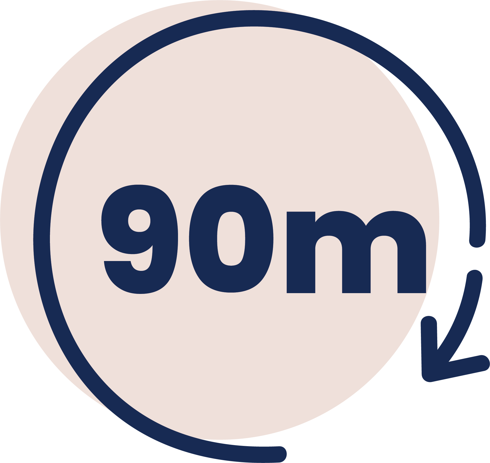

body cupping massage
the only negativity acceptable in life
By creating suction and negative pressure, this therapy release rigid soft tissue, drains excess fluids an toxins loosens adhesion, lifts connective tissues, and brings blood flow to stagnant skin and muscles.
You do not need to have any injury to receive a Cupping Therapy treatment.
Cups may be placed almost anywhere on the body.
$130
relaxing treatment + Pain Free
For this treatment, I first massage the problem area(s), then glide cups over it, leaving them in place
for up to 20 minutes.
While waiting, I attend to other body parts.
Afterwards, I revisit the original cups—if the marks are dark, I focus there before completing the rest of
the session.
Static cupping (leaving cups in one place) can cause marks or discoloration.
Don't want marks? I'll keep the cups moving instead.
but with the same
overall benefits
Glass or Ceramic
fire cups
Fire cupping is a traditional method where a glass or ceramic cup is briefly heated with a flame, then placed on the skin. As the air inside the cup cools, it creates suction that draws the skin and underlying tissue upward.
The cups are not hot. The warmth of the cup's edge adds a soothing sensation, making the experience more relaxing than standard suction cups, especially when gliding.
Silicone
Baguanfa Cups
Silicone cups are soft, flexible cups made of medical- or food-grade silicone designed to create suction on the skin. Versatile: used in “static” mode or “glide” mode (suction then slide with movement).
These cups adapt easily to tricky areas like your shins, forearms and elbows, making them ideal for stretching and targeting bony or curved spots.
Biomagnetic (Plastic Air Pump)
Kangzhu Cups
he interchangeable & removable magnetic pressure points (both positive and negative polarity) generate a continuous magnetic field throughout the tissue when installed. These magnets do not penetrate the skin but provide non-invasive pressure on its surface. Their purpose is to deliver balanced magnetic exposure.
Ideal to support better sleep, ease sciatica discomfort, reduce numbness or tingling, and help soften scar tissue.
Dynamic Suction Technology
Achedaway Smart Cupper
These advanced cup devices are designed to enhance muscle recovery, alleviate pain, and improve mobility. Combining dynamic suction, red light therapy, and smart app control, it offers a modern approach to traditional cupping methods.
Silicone
Grip Cup
This set of four large, food-grade silicone cups is designed for both static and dynamic use—excellent for targeting trigger points, hands, feet, joints and larger muscle groups. Versatile: used in “static” mode or “glide” mode (suction then slide with movement).
These cups create a firm suction—perfect for a pulling-motion technique that lifts and shifts tissue.
not bruises!
Cupping mark can last a few days to a
couple weeks.
With regular cupping, the marks get lighter and disappear faster each time.
Cupping marks are your body's way of saying it dragged out all the old gunk (stagnant blood, lymph, waste)
from deep down, stirred up the circulation, and is now doing the cleanup work.
#betteroutthanin
When not to Cup
Cancer or Undergoing Cancer Treatment Organ Compromise (Heart, Liver, Kidney) Hemophilia or other Bleeding Disorders Active Infections Pacemaker or Implanted Electronic Devices Undiagnosed Lumps or Masses Recent Surgery or Open Wounds Sunburned or Excessively Sensitive Skin Breastfeeding or Pumping Herniated Disc or Degenerative Disc Disease
can help to Cup
Muscle & Joint Pain Respiratory Issues Scars & Scar Tissues Lymphatic Drainage/Swelling Difficulty Sleeping Migraines & Headaches
but wait... there's more!
Improving Circulation Chronic & Stubborn Injuries/Pain Sports Massage & Injuries Digestive Issues High Blood Pressure
Facial Cupping Therapy
synergistic facial therapy
A combination of Acupressure, Thermotherapy, Facial Cupping, Lymphatic Drainage, and a Hydrating Mask is applied then completed with moisturizer and SPF.
$135
sculpting facial therapy
Skin is cleansed, facial cupping, a mask is applied, and completed with moisturizer and SPF.
rejuvenation facial therapy
Skin is cleansed, facial cupping, and completed with moisturizer and SPF.
specifically made for the face
These cups are specifically made for the face, with minimal, but effective suction. Because these cups are constantly moving, the intention is to not leave marks or discolorations on the skin.
#betteroutthanin
can help with
Cancer or Undergoing Cancer Treatment Organ Compromise (Heart, Liver, Kidney) Hemophilia or other Bleeding Disorders Active Infections Pacemaker or Implanted Electronic Devices Undiagnosed Lumps or Masses Recent Surgery or Open Wounds Sunburned or Excessively Sensitive Skin Breastfeeding or Pumping Herniated Disc or Degenerative Disc Disease